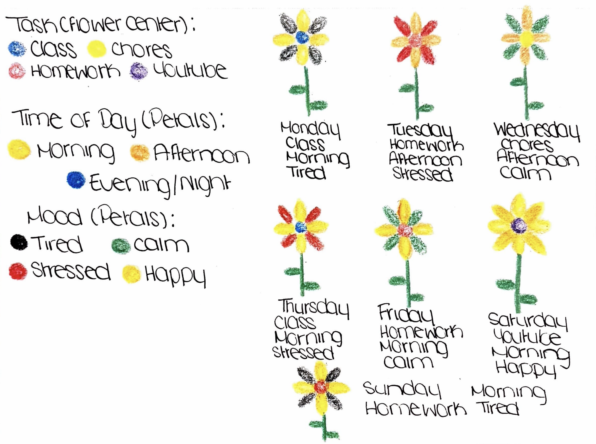

A Week in Bloom
Each flower represents a day of my week, with its petals reflecting the activities I spent my time on throughout the day.
How to Read My Data
Each flower represents one day of my week. The center of each flower represents the main task I completed that day, while the petals represent the time of day I completed the task and my mood. Alternating petal colors make it possible to identify both details. The information underneath each flower shows the day, task, time, and mood.
Task (Flower Center)
Class
Homework
Chores
YouTube
Time of Day (Petals)
Morning
Afternoon
Evening/Night
Mood (Petals)
Tired
Stressed
Calm
Happy
Original Design Sketch
My original idea was to represent each day with a flower and use different visual elements to distinguish between my daily activities and experiences.
